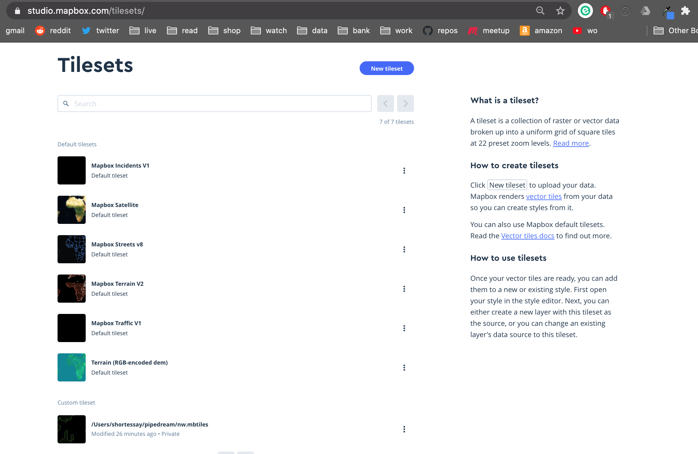
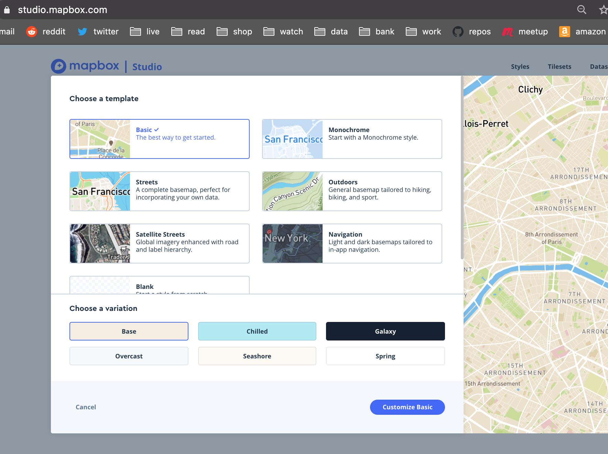
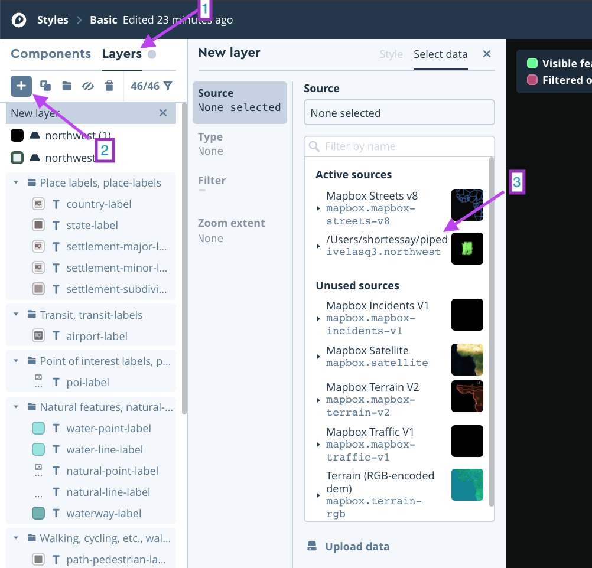
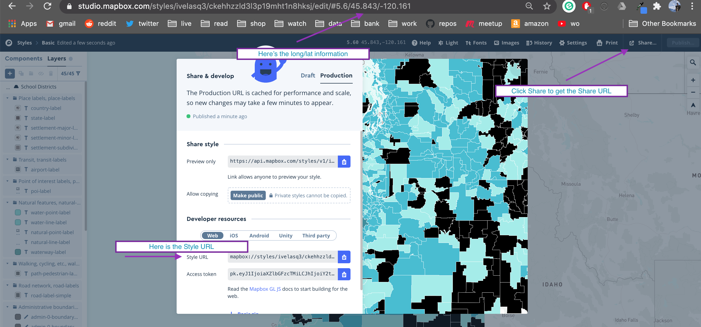

An even easier-to-use R package for school district shapefiles
package
map
shiny
Thanks to contributions from Daniel Anderson, {leaidr} is even easier to use.
Published
August 30, 2020
Piet Mondrian, Tableau No. 2/Composition No. VII (1913)
An update to leaidr
A few months ago, I created {leaidr} for easier download of U.S. school district shapefiles. Daniel Anderson went through and greatly improved the package, making it even easier to download and use the shapefiles (thanks Dan!).
Now, instead of having to run lea_prep(), you can download the shapefiles from Dan’s Github repository like so:
library(leaidr)tn <-lea_get("tn")
OGR data source with driver: ESRI Shapefile
Source: "/private/var/folders/pj/nmg9b8_93dq4kwt8nt2d4cj40000gn/T/RtmpqlCmYd/47", layer: "47"
with 158 features
It has 18 fields
Asmae Toumi wrote a blog post on how to make maps using R and Mapbox. So, I figured: why not announce the new and improved {leaidr} functions to create a beautiful Mapbox map??
This walkthrough will go a little deeper with Mapbox, as I am an extreme beginner and had to do a lot of investigating to figure out how to use it.
I suggest first reading through Asmae’s tutorial as there are a few things you need to do before being able to run the below: download the {mapboxapi} package, create a Mapbox account, and install Tippecanoe.
Load the packages
Here are the packages you will need:
library(tidyverse)# remotes::install_github("walkerke/mapboxapi")library(mapboxapi)# if you haven't installed the package yet# devtools::install_github("ivelasq/leaidr")library(leaidr)library(rmapshaper)library(mapdeck)
Download the data
Download your shapefiles. If you want to make a choropleth map, also read in the data that you will append to your shapefiles and merge them by a common ID. (Sorry for using a local file!)
This is the part that I had to figure out on the Mapbox website. This walkthrough was helpful. Once you have uploaded the tiles using upload_tiles(), you should see them available under “Custom tileset” at the bottom of this webpage: https://studio.mapbox.com/tilesets/.

Mapbox Tilesets
Then, go to Styles on this webpage: https://studio.mapbox.com/. Click “New Style” and choose the template you want, then Customize.

Mapbox Template
To add your tileset, go to Layers, click the Plus sign, then under “Source”, find your uploaded tileset, or add the tileset by the ID given by upload_tiles().

Mapbox Layers
I zoomed to where my tiles are located (Oregon and Washington) and started editing. This section of the walkthrough explains how to create a choropleth map, where each geography has a different color according to a value.
Once done styling, I clicked “Publish” on the top right of Mapbox Studio.
Using the map in R
To get the information to bring it back into R and be able to use the map in a Shiny app, I clicked “Share” and scrolled to find the Style ID.

Mapbox Sharing
I copied the Share URL to include in the function below. For the location parameter, I used the latitude/longitude listed in the browser URL. I played around with the zoom level until I found one I liked.
Once you have the mapdeck() function all set up, you can use it in a Shiny app. Here’s some reference code that I found useful for using renderMapdeck(). Thank you Greg Huang!
This is an example of a very bare-bones Shiny app. For the UI, use mapdeckOutput():
Now, say you would like to add the Shiny app to your package as well as upload it to shinyapps.io / instead of uploading to shinyapps.io. Thankfully, Dean Attali has a great walkthrough on how to do this!
Add {shiny} to your dependencies in your DESCRIPTION file (I do this with usethis::use_package("shiny")).
Create a folder called inst in your package with another folder for the Shiny example, and your UI/server file(s) within.
Create an R file to run your example (I used usethis::use_r("runExample.R")) to create this file.
Don’t forget to document! devtools::document()
So, if you were to install and load {leaidr}, you can run leaidr::runExample() to launch the Shiny app. To see what the files look like, check out the Github repo files here.
Conclusion
In conclusion, {leaidr} can help you map your data as long as you have school district LEAID’s or names in there somewhere. I hope that it helps you in your education data projects!
Liked this article? I’d love for you to retweet!
New goodies for leaidr, an #rstats pkg for school district shapefiles!